JVM监控及诊断-工具篇
01-工具概述
使用上一章命令行工具或组合能帮您获取目标]aVa应用性能相关的基础信息，但它们存在下列局限：
- 无法获取方法级别的分析数据，如方法间的调用关系、各方法的调用次数和调用时间
等（这对定位应用性能瓶颈至关重要）。 - 要求用户登录到目标Java应用所在的宿主机上，使用起来不是很方便。
- 分析数据通过终端输出，结果展示不够直观。
为此，JDK 提供了一些内存泄漏的分析工具，如 jconsole, jvisualvm 等，用于辅助开发人员定位问题，但是这些工具很多时候并不足以满足快速定位的需求。所以这里我们介绍的工具相对多一些、丰富一些。
图形化综合诊断工具
-
JDK自带的工具
- jconsole: JDK 自带的可视化监控工具。查看Java应用程序的运行概况、监控堆信。
息、永久区（或元空间）使用情况、类加载情况等。 - Visual VM: Visual VM 是一个工具，它提供了一个可视界面，用于查看 Java 虚拟机上运行的基于Java技术的应用程序的详细信息。
- JMC: Java Mission Control, 内置 Java Flight Recorder。能够以极低的性能开销收集 Java 虚拟机的性能数据。
- jconsole: JDK 自带的可视化监控工具。查看Java应用程序的运行概况、监控堆信。
-
第三方工具
-
MAT: MAT(Memory Analyzer Tool) 是基于 Eclipse 的内存分析工具，是一个快速、功能丰富的 Java heap 分析工具，它可以帮助我们查找内存泄漏和减少内存消耗。
Eclipse的插件形式
-
JProfiler: 商业软件，需要付费。功能强大。
与 VisualVM 类似
-
Arthas: Alibaba 开源的 Java 诊断工具。
-
Btrace: Java 运行时追踪工具. 可以在不停机的情况下, 跟踪指定的方法调用、构造函数调用和系统内存等信息。
-
02-JConsole
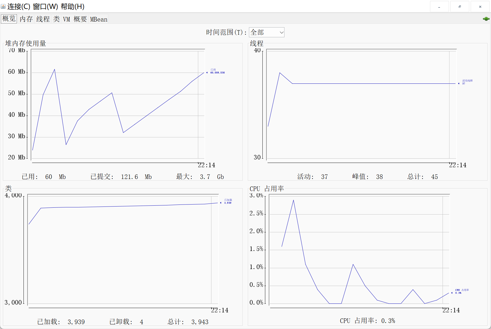
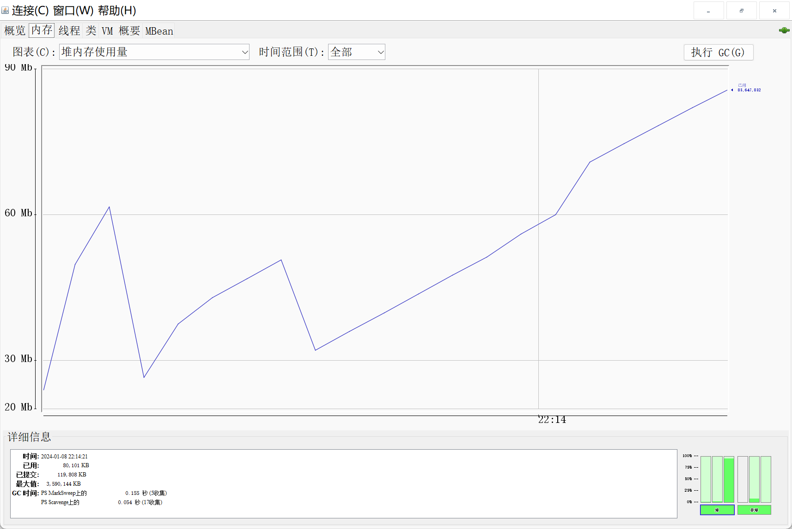
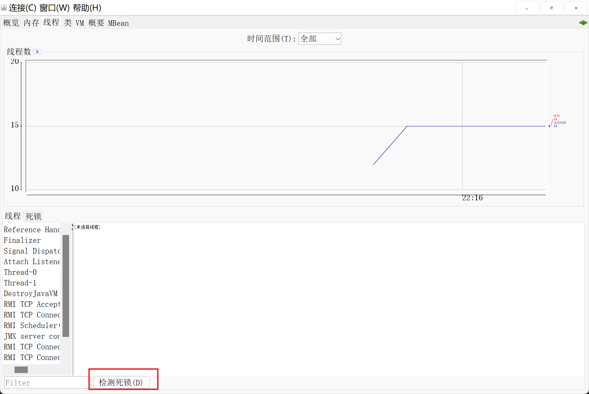
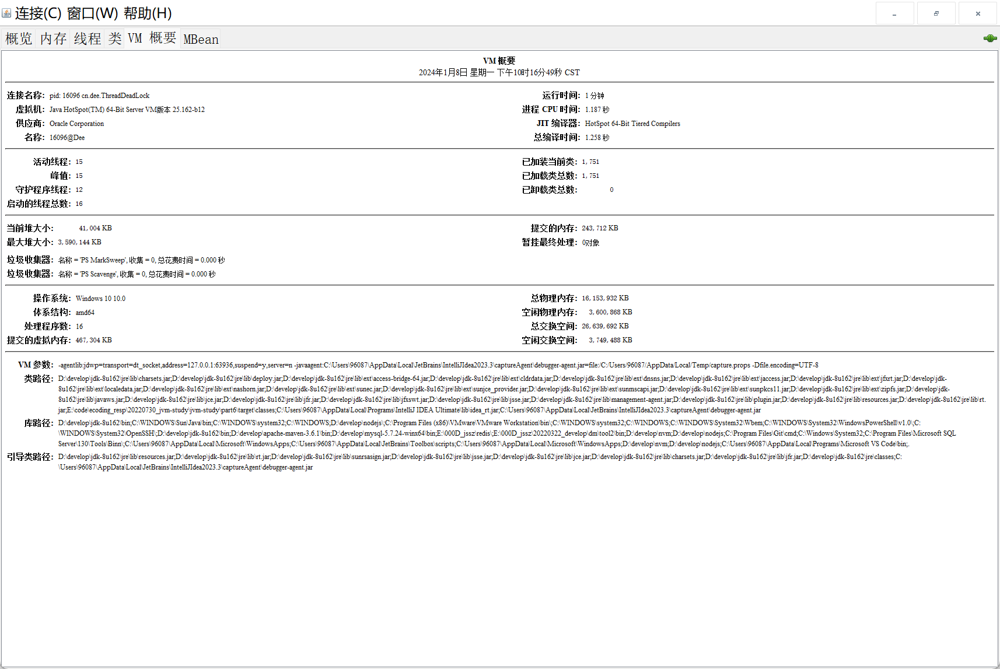
03-Visual VM
插件的安装
- Visual VM 的一大特点是支持插件扩展，并且插件安装非常方便。我们既可以通过离线下载插件文件 *.nbm, 然后在 Plugin 对话框的己下载页面下，添加己下载的插件。也可以在可用插件页面下，在线安装插件。（这里建议安装上：VisualGC)
插件地址：https://visualvm.github.io/pluginscenters.html
1-生成/读取堆内存快照
04-Eclipse MAT
获取堆dump文件
MAT可以分析heap dump文件。在进行内存分析时，只要获得了反映当前设备内存映像的nprof文件，通过MAT打开就可以直观地看到当前的内存信息。
一般说来，这些内存信息包含：
- 所有的对象信息，包括对象实例、成员变量、存储于栈中的基本类型值和存储于堆中的其他对象的引用值。
- 所有的类信息，包括classloader、类名称、父类、静态变量等
- GCRoot 到所有的这些对象的引用路径
- 线程信息，包括线程的调用栈及此线程的线程局部变量(TLS)
获取堆dump文件
-
通过前一章介绍的jmap工具生成，可以生成任意一个java进程的dump文件：
-
通过配置JVM参数生成。
- 选项
-XX:+HeapDumpOnOutOfMemoryError或-XX:+HeapDumpBeforeFullGC - 选项
-XX:HeapDumpPath所代表的含义就是当程序出现 OutofMemory 时，将会在相应的目录下生成一份 dump 文件。如果不指定选项-XX:HeapDumpPath则在当前目录下生成 dump 文件。
- 选项
对比：考虑到生产环境中几乎不可能在线对其进行分析，大都是采用离线分析，因此使用 jmap + MAT 工具是最常见的组合。
-
使用 VisualVM 可以导出堆 ump 文件。
-
使用 MAT 即可打开一个已有的堆快照, 也可以通过 MAT 直接从活动 Java 程序中导出堆快照。
该功能将借助 jps 列出当前正在运行的 Java 进程, 以供选择并获取快照。
分析堆dump文件
概述
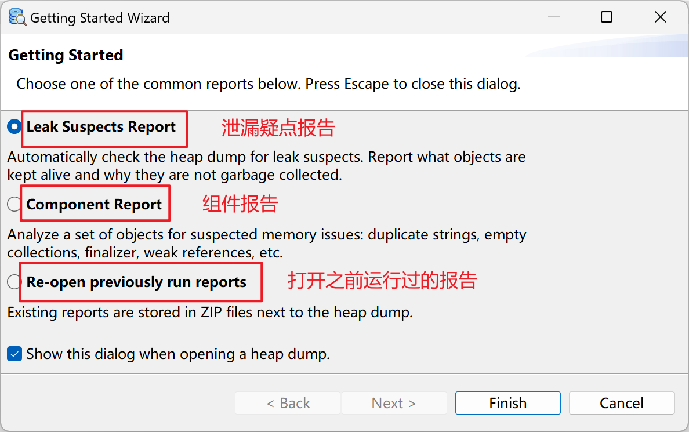
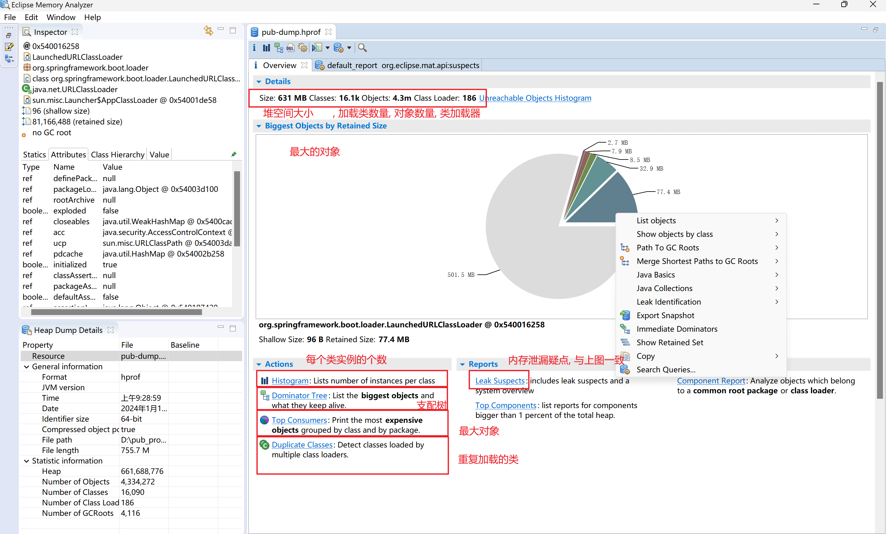
Histogram
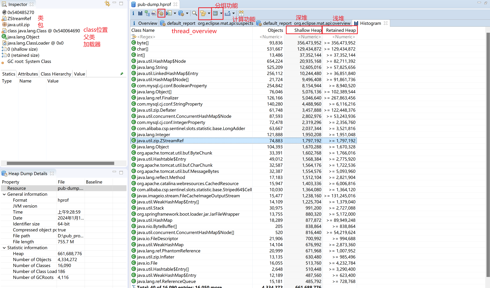
thread_overview
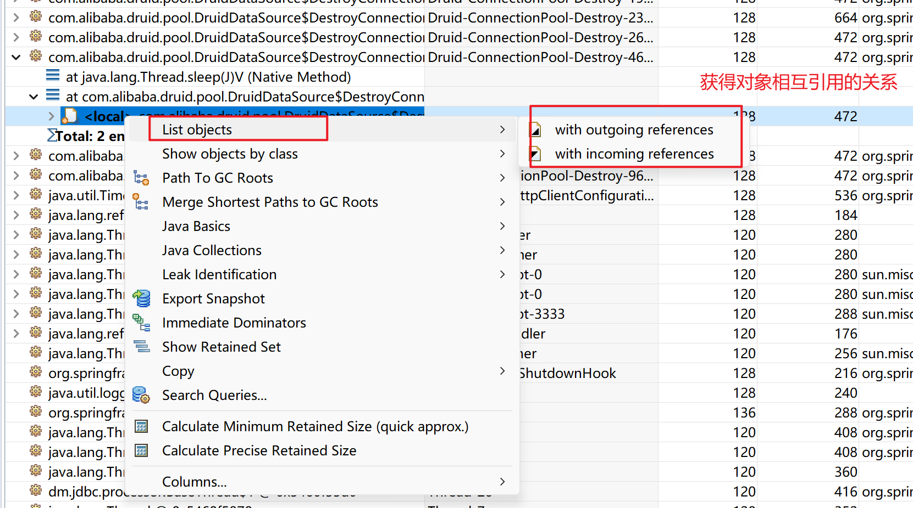
深堆与浅堆
浅堆(Shallow Heap) 是指一个对象所消耗的内存。在 32 位系统中，一个对象引用会占据 4 个字节，一个 int 类型会占据 4 个字节，long 型变量会占据 8 个字节，每个对象头需要占用 8 个字节。根据堆快照格式不同，对象的大小可能会向 8 字节进行对齐。
以 String 为例：2 个 int 值共占 8 字节，对象引用占用 4 字节，对象头 8 字节，合计 20 字节，向 8 字节对齐，故占 24 字节。(jdk7中)
| String对象空间 | ||
|---|---|---|
| int | hash32 | 0 |
| int | hash | 0 |
| ref | value | C:\Users\Administrat |
这 24 字节为 String 对象的浅堆大小. 它与 String 的 value 实际取值无关, 无论字符串长度如何, 浅堆大小始终是 24 字节
保留集(Retained Set):
对象 A 的保留集指当对象 A 被拉垃圾回收后，可以被释放的所有的对象集合（包括对象 A 本身），即对象 A 的保留集可以被认为是只能通过对象 A 被直接或间接访问到的所有对象的集合。通俗地说，就是指仅被对象A所持有的对象的集合。
深堆(Retained Heap):
深堆是指对象的保留集中所有的对象的浅堆大小之和。
注意：浅堆指对象本身占用的内存，不包括其内部引用对象的大小。一个对象的深堆指只能通过该对象访问到的（直接或间接）所有对象的浅堆之和，即对象被回收后，可以释放的真实空间。
对象的实际大小
另外一个常用的概念是对象的实际大小。这里，对象的实际大小定义为一个对象所能触及的所有对象的浅堆大小之和，也就是通常意义上我们说的对象大小。与深堆相比，似乎这个在日常开发中更为直观和被人接受，但实际上，这个概念和垃圾回收无关。
下图显示了一个简单的对象引用关系图，对象 A 引用了 C 和 D, 对象 B 引用了 C 和 E。那么对象 A 的浅堆大小只是 A 本身，不含 C 和 D,而 A 的实际大小为A、C、D三者之和。而 A 的深堆大小为 A 与 D 之和，由于对象 C 还可以通过对象 B 访问到，因此不在对象 A 的深堆范围内。
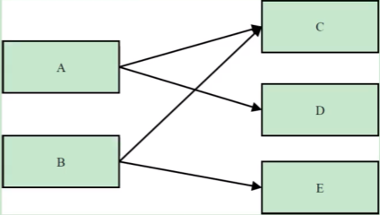
A 的浅堆大小只有它自己, A 的深堆大小则是 A + D, A 对象的实际大小是 A + C + D
看图理解 Retained Size
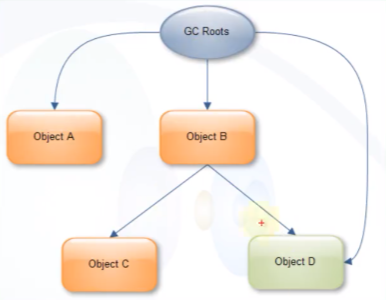
上图中, GC Roots 直接引用了 A 和 B 两个对象
A 对象的 Retained Size=A 对象的 Shallow Size
B 对象的 Retained Size=B 对象的 Shallow Size + C 对象的 Shallow Size
这里部包括 D 对象, 因为 D 对象被 GC Roots 直接引用
如果 GC Roots 不引用 D 对象呢?
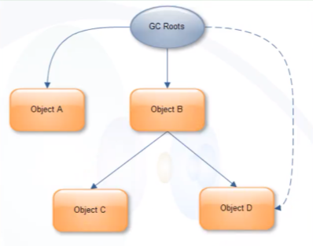
案例分析 StudentTrace
//-XX:+HeapDumpBeforeFullGC -XX:HeapDumpPath=d:\student.hprof
public class StudentTrace {
static List<WebPage> webpages = new ArrayList<WebPage>();
public static void createWebPages() {
for (int i = 0; i < 100; i++) {
WebPage wp = new WebPage();
wp.setUrl("http://www." + Integer.toString(i) + ".com");
wp.setContent(Integer.toString(i));
webpages.add(wp);
}
}
public static void main(String[] args) {
createWebPages();//创建了100个网页
//创建3个学生对象
Student st3 = new Student(3, "Tom");
Student st5 = new Student(5, "Jerry");
Student st7 = new Student(7, "Lily");
for (int i = 0; i < webpages.size(); i++) {
if (i % st3.getId() == 0)
st3.visit(webpages.get(i));
if (i % st5.getId() == 0)
st5.visit(webpages.get(i));
if (i % st7.getId() == 0)
st7.visit(webpages.get(i));
}
webpages.clear();
System.gc();
}
}
class Student {
private int id;
private String name;
private List<WebPage> history = new ArrayList<>();
public Student(int id, String name) {
super();
this.id = id;
this.name = name;
}
public int getId() {
return id;
}
public void setId(int id) {
this.id = id;
}
public String getName() {
return name;
}
public void setName(String name) {
this.name = name;
}
public List<WebPage> getHistory() {
return history;
}
public void setHistory(List<WebPage> history) {
this.history = history;
}
public void visit(WebPage wp) {
if (wp != null) {
history.add(wp);
}
}
}
class WebPage {
private String url;
private String content;
public String getUrl() {
return url;
}
public void setUrl(String url) {
this.url = url;
}
public String getContent() {
return content;
}
public void setContent(String content) {
this.content = content;
}
}
运行后用 MAT 打开, 打开 thread_over
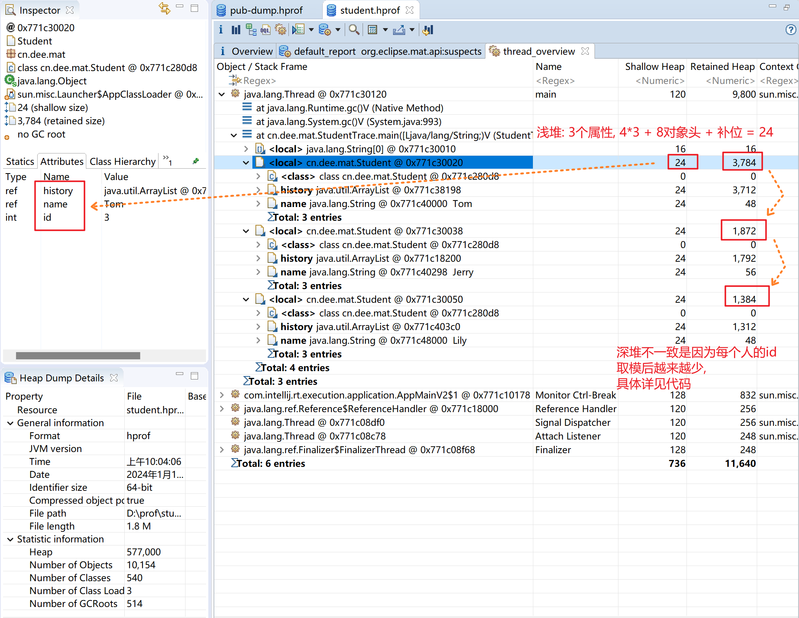
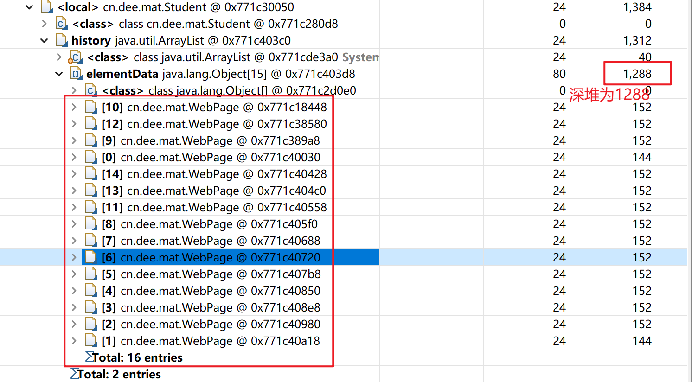
以 Lily 为例, elementData[ ] 中总共有15个 WebPage 对象(此处不能只看数组长度, 这里是数组长度恰好等于元素个数)
13个152 字节, 2个144字节, 13 * 152 + 2 * 144 = 2264 < 1288
是因为有一些 WebPage 是它们共有的, 因此不能算作 Lily 的深堆
能被 7 整除, 且能被 3 整除, 以及能被 5整除的数: 0, 21, 35, 42, 63, 70, 84. 共 7 个. 即 6 * 152 + 1 * 144 = 1056
2264 - 1056 = 1208 = 1288 - 80字节! (即: 还可以多回收 80 个字节)
这 80 个字节是什么??
即 elementData 对象本身的浅堆:
- 对象头 = 12个字节(默认采用指针压缩, 没有则是16字节) + 4(数组长度)
- 数组本身4个字节数
- 数组引用 = 15个elementData的元素 * 4 = 60字节
补充: 为什么会有 152 字节和 144 字节:
因为URL和content会存在两种情况:
URL: “http://www.7.com” content: “7”
URL长度为 16, 底层的 char 数组的占用空间为([ ] 方括号里面整个都属于对象头, 分开写方便理解)
[普通对象头(12) + 数组长度(4)] + 16个字符(32) = 48字节, 符合 8 字节对齐
同理 content 占用 [普通对象头(12) + 数组长度(4)] + 一个字符(2) = 18 字节, 八字节对齐=24字节
URL: “http://www.14.com” content: “14”
URL长度为17, 底层的 char 数组的占用空间为
[普通对象头(12) + 数组长度(4)] + 17个字符(34) = 50字节, 不符合8字节对齐, 对齐为 56
同理 content 占用 [普通对象头(12) + 数组长度(4)] + 两个字符(4) = 20 字节, 八字节对齐=24字节
因此第二种比第一种多了 8 字节, 所以是 152 和 144 (为什么总大小是 152 而不是 72 是因为我们只计算了 String 底层的 char 数组的区别, 没有计算各变量本身的浅堆, 因为结构都相同, 所以差别就差在内容的占用上)
支配树
(Dominator Tree)
支配树的概念源自图论。
MAT 提供了一个称为支配树(Dominator Tree)的对象图。支配树体现了对象实例间的支配关系。在对象引用图中，所有指向对象B的路径都经过对象 A, 则认为对象 A 支配对象 B。如果对象 A 是离对象 B 最近的一个支配对象，则认为对象 A 为对象 B 的直接支配者。支配树是基于对象间的引用图所建立的，它有以下基本性质：
- 对象A的子树（所有被对象A支配的对象集合）表示对象A的保留集(retained set),即深堆。
- 如果对象A支配对象B,那么对象A的直接支配者也支配对象B。
- 支配树的边与对象引用图的边不直接对应。
如下图所示：左图表示对象引用图，右图表示左图所对应的支配树。对象 A 和 B 由根对象直接支配，由于在到对象 C 的路径中，可以经过 A，也可以经过 B, 因此对象 C 的直接支配者也是根对象。对象 F 与对象 D 相互引用，因为到对象 F 的所有路径必然经过对象 D, 因此，对象 D 是对象 F 的直接支配者。而到对象 D 的所有路径中，必然经过对象 C, 即使是从对象 F 到对象 D 的引用，从根节点出发，也是经过对象 C 的，所以，对象 D 的直接支配者为对象 C。
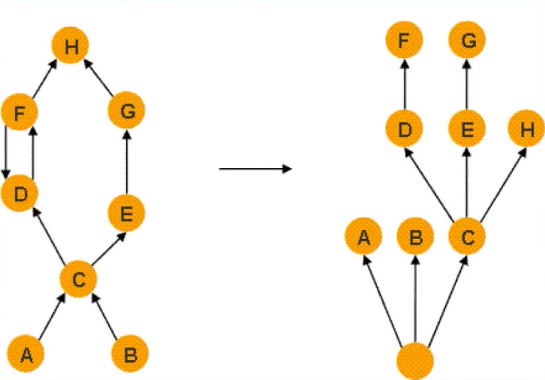
同理，对象 E 支配对象 G。到达对象 H 的可以通过对象 D ,也可以通过对象 E,因此对象 D 和 E 都不能支配对象 H, 而经过对象 C 既可以到达 D 也可以到达 E, 因此对象 C 为对象 H 的直接支配者。
在 MAT 中, 单机工具栏上的对象支配树按钮, 可以打开对象支配树视图。
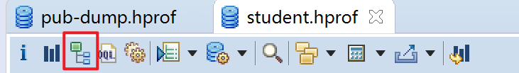
下图显示了对象支配树视图的一部分。该截图显示部分 Lily 学生的 history 队列的直接支配对象。即当 Lily 对象被回收，也会一并回收的所有对象。显然能被 3 或者 5 整除的网页不会出现在该列表中，因为它们同时被另外两名学生对象引用。
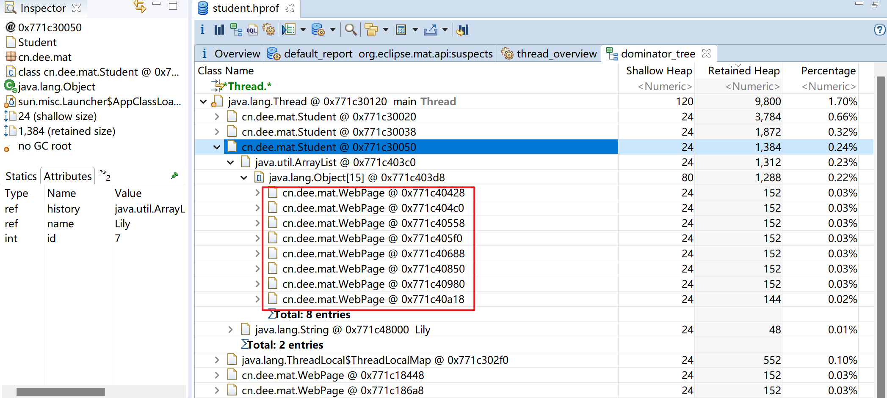
通过正则搜索 Thread 后, 找到 Lily,
注意: 此处支配树中的 ArrayList 只有 8 个, 与前面的引用分析中 15-7=8 就能对上了
案例: Tomcat堆溢出分析
Tomcat 是最常用的 Java Servlet 容器之一，同时也可以当做单独的 Web 服务器使用。Tomcat 本身使用 Java 实现，并运行于 Java 虚拟机之上。在大规模请求时，Tomcat 有可能会因为无法承受压力而发生内存溢出错误。这里根据一个被压垮的 Tomcat 的堆快照文件，来分析 Tomcat 在崩溃时的内部情况。
分析过程
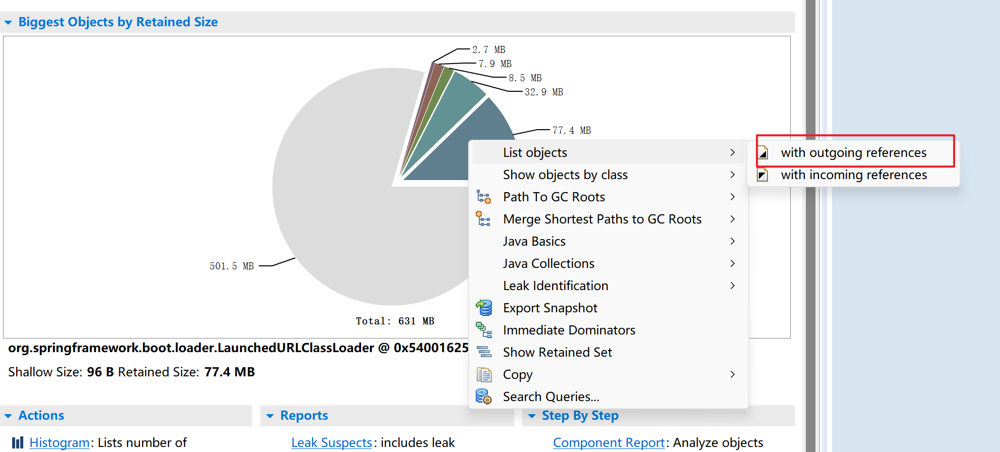
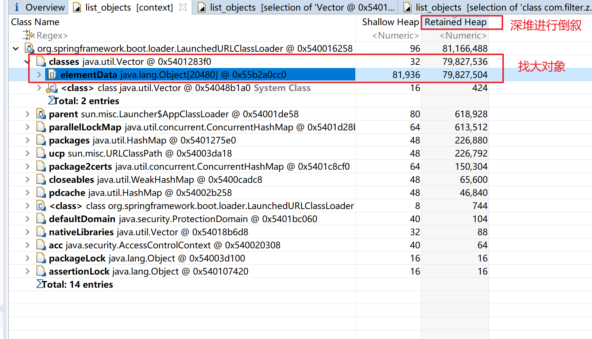
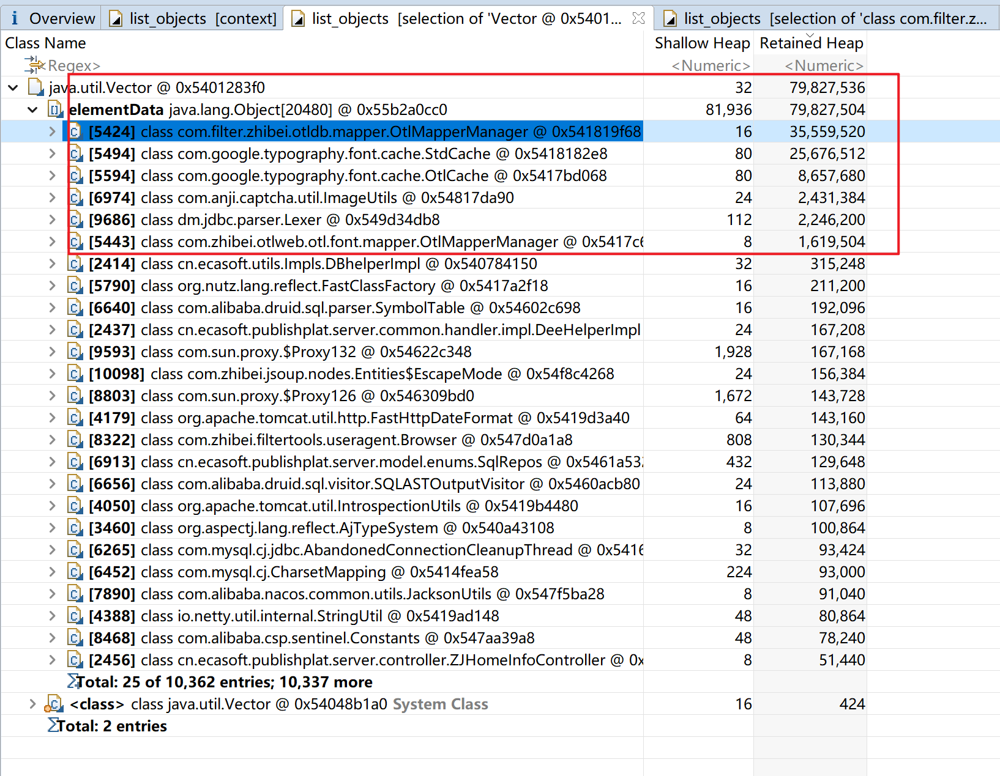
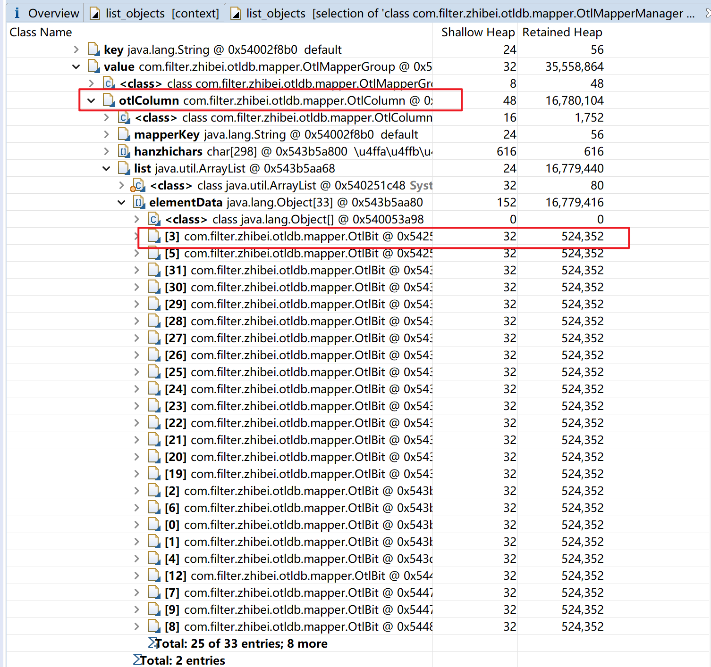
由此继续排查, 并且结合实际分析
05-JProfiler
概述
-
方法调用
对方法调用的分析可以帮助您了解应用程序正在做什么，并找到提高其性能的方法
-
内存分配
通过分析堆上对象、引用链和垃圾收集能帮您修复内存泄露问题，优化内存使用
-
线程和锁
JProfiler提供多种针对线程和锁的分析视图助您发现多线程问题
-
高级子系统
许多性能问题都发生在更高的语义级别上。例如，对于JDBC调用，您可能希望找出执行最慢的SQL语句。JProfiler支持对这些子系统进行集成分析
安装与配置
使用
数据采集方式
JProfier数据采集方式分为两种：Sampling(样本采集) 和 Instrumentation(重构模式)
- Instrumentation: 这是 JProfiler:全功能模式。在 class 加载之前，JProfier 把相关功能代码写入到需要分析的 class 的 bytecode中，对正在运行的 jvm 有一定影响。
- 优点：功能强大。在此设置中，调用堆栈信息是准确的。
- 缺点：若要分析的 class 较多，则对应用的性能影响较大，CPU 开销可能很高（取决于 Filter 的控制)。因此使用此模式一般配合 Filter 使用，只对特定的类或包进行分析
- Sampling: 类似于样本统计，每隔一定时间(5ms)将每个线程栈中方法栈中的信息统计出来。
- 优点：对 CPU 的开销非常低，对应用影响小（即使你不配置任何 Filter)
- 缺点：一些数据/特性不能提供（例如：方法的调用次数、执行时间）
注：JProfiler 本身没有指出数据的采集类型，这里的采集类型是针对方法调用的采集类型。
因为 JProfiler 的绝大多数核心功能都依赖方法调用采集的数据，所以可以直接认为是 JProfiler 的数据采集类型。
遥感监测 Telemetries
内存视图 Live Memory
Live memory 内存剖析：class/class instance 的相关信息。例如对象的个数，大小，对象创建的方法执行栈，对象创建的热点。
-
所有对象 All Objects
显示所有加载的类的列表和在堆上分配的实例数。只有 Java1.5(JMTI) 才会显示此视图。
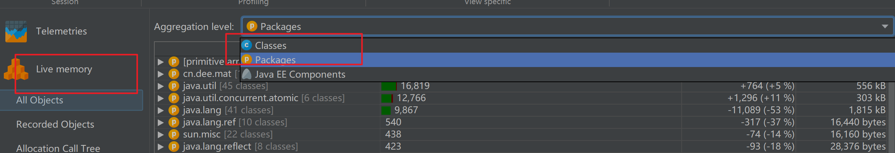
-
记录对象 Record Objects
查看特定时间段对象的分配，并记录分配的调用堆栈。
-
分配访问树 Allocation Call Tree
显示一棵请求树或者方法、类、包或对己选择类有带注释的分配信息的 J2EE 组件。 -
分配热点 Allocation Hot Spots
显示一个列表，包括方法、类、包或分配已选类的 J2EE 组件。你可以标注当前值并且显示差异值。对于每个热点都可以显示它的跟踪记录树。
-
类追踪器 Class Tracker
类跟踪视图可以包含任意数量的图表，显示选定的类和包的实例与时间。
分析: 内存中的对象的情况
- 频繁创建的 Java 对象：死循环、循环次数过多(Instance Count 多, Size 也大)
- 存在大的对象：读取文件时，byte[ ] 应该边读边写。–> 如果长时间不写出的话，导致 byte[ ] 过大存在内存泄漏
注意：
- All Objects 后面的 Size 大小是浅堆大小
- Record Objects 在判断内存泄露的时候使用，可以通过观察 Telemetries 中的 Memory，如果里面出现垃圾回收之后的内存占用逐步提高，这就有可能出现内存泄露问题，所以可以使用 Record Objects 查看，但是该分析默认不开启，毕竟占用 CPU 性能太多
堆遍历 heap walker
cpu视图 cpu views
JProfiler 提供不同的方法来记录访问树以优化性能和细节。线程或者线程组以及线程状况可以被所有的视图选择。所有的视图都可以聚集到方法、类、包或 J2EE 组件等不同层上。
访问树 Call Tree
显示一个积累的自顶向下的树，树中包含所有在 JVM 中己记录的访问队列。JDBC, JMS 和 JNDI 服务请求都被注释在请求树中。请求树可以根据 Servlet 和 JSP 对 URL 的不同需要进行拆分。
热点 Hot Spots
显示消耗时间最多的方法的列表。对每个热点都能够显示回溯树。该热点可以按照方法请求，JDBC, JMS 和 JNDI 服务请求以及按照 URL请求来进行计算。
访问图 Call Graph
显示一个从已选方法、类、包或 J2EE 组件开始的访问队列的图。
方法统计 Method Statistis
显示一段时间内记录的方法的调用时间细节。
线程视图 threads
JProfiler 通过对线程历史的监控判断其运行状态，并监控是否有线程阻塞产生，还能将一个线程所管理的方法以树状形式呈现。对线程剖析。
线程历史 Thread History
显示一个与线程活动和线程状态在一起的活动时间表。
线程监控 Thread Monitor
显示一个列表，包括所有的活动线程以及它们目前的活动状况。
线程转储 Thread Dumps
显示所有线程的堆栈跟踪。
线程分析主要关心三个方面：
- web 容器的线程最大数。比如：Tomcat 的线程容量应该略大于最大并发数。
- 线程阻塞
- 线程死锁
监视器&锁 Monitors&locks
监控和锁 Monitors & Locks 所有线程持有锁的情况以及锁的信息。
观察 JVM 的内部线程并查看状态：
- 死锁探测图表 Current Locking Graph: 显示 JVM 中的当前死锁图表。
- 目前使用的监测器 Current Monitors: 显示目前使用的监测器并且包括它们的关联线程。
- 锁定历史图表 Locking History Graph: 显示记录在 JVM 中的锁定历史。
- 历史检测记录 Monitor History: 显示重大的等待事件和阻塞事件的历史记录。
- 监控器使用统计 Monitor Usage Statistics: 显示分组监测，线程和监测类的统计监测数据
案例分析
public class JProfilerTest {
public static void main(String[] args) {
while (true){
ArrayList list = new ArrayList();
for (int i = 0; i < 500; i++) {
Data data = new Data();
list.add(data);
}
try {
TimeUnit.MILLISECONDS.sleep(500);
} catch (InterruptedException e) {
e.printStackTrace();
}
}
}
}
class Data{
private int size = 10;
private byte[] buffer = new byte[1024 * 1024];//1mb
private String info = "hello,dee";
}public class MemoryLeak {
public static void main(String[] args) {
while (true) {
ArrayList beanList = new ArrayList();
for (int i = 0; i < 500; i++) {
Bean data = new Bean();
data.list.add(new byte[1024 * 10]);//10kb
beanList.add(data);
}
try {
TimeUnit.MILLISECONDS.sleep(500);
} catch (InterruptedException e) {
e.printStackTrace();
}
}
}
}
class Bean {
int size = 10;
String info = "hello,dee";
static ArrayList list = new ArrayList();
}06-Arthas
概述
Arthas(阿尔萨斯) 是Alibaba 开源的 Java 诊断工具，深受开发者喜爱。在线排查问题，无需重启; 动态跟踪 Java 代码：实时监控 JVM 状态。
Arthas 支持 JDK6+,支持 Linux,/Mac/Windows, 采用命令行交互模式，同时提供丰富的 Tab 自动补全功能，进一步方便进行问题的定位和诊断。
当你遇到以下类似问题而束手无策时，Arthas 可以帮助你解决：
- 这个类从哪个 jar 包加载的？为什么会报各种类相关的 Exception?
- 我改的代码为什么没有执行到？难道是我没 commit? 分支搞错了？
- 遇到问题无法在线上 debug, 难道只能通过加日志再重新发布吗？
- 线上遇到某个用户的数据处理有问题，但线上同样无法 debug, 线下无法重现！
- 是否有一个全局视角来查看系统的运行状况？
- 有什么办法可以监控到 JVM 的实时运行状态？
- 怎么快速定位应用的热点，生成火焰图？
基于哪些工具而来
- greys-anatomy: Arthas 代码基于 Greys 二次开发而来，非常感谢 Greys 之前所有的工作，以及 Greys 原作者对 Arthas 提出的意见和建议！
- termd: Arthas 的命令行实现基于 termd 开发，是一款优秀的命令行程序开发框架，感谢 termd 提供了优秀的框架。
- crash: Arthas 的文本渲染功能基于 crash 中的文本渲染功能开发，可以从这里看到源码，感谢 crash 在这方面所做的优秀工作。
- cli: Arthas 的命令行界面基于 vert.x 提供的 cli 库进行开发，感谢 vert.x 在这方面做的优秀工作。
- compiler Arthas 里的内存编绎器代码来源
- Apache Commons Net Arthas 里的 Telnet client 代码来源
- JavaAgent: 运行在 main 方法之前的拦截器，它内定的方法名叫 premain, 也就是说先执行 premain 方法然后再执行 main 方法
- ASM: 一个通用的 Java 字节码操作和分析框架。它可以用于修改现有的类或直接以二进制形式动态生成类。ASM 提供了一些常见的字节码转换和分析算法，可以从它们构建定制的复杂转换和代码分析工具。ASM 提供了与其他 Java 字节码框架类似的功能，但是主要关注性能。因为它被设计和实现得尽可能小和快，所以非常适合在动态系统中使用（当然也可以以静态方式使用，例如在编译器中)
安装与使用
wget https://alibaba.github.io/arthas/arthas-boot.jar
wget https://arthas.gitee.io/arthas-boot.jar
#启动
java -jar arthas-boot.jar [pid]
#退出
# 最后一行[arthas(@7457]$,说明打开进入了监控客户端，在这里就可以执行相关命令进行查看了。
# 使用quit\exit:退出当前客户端
# 使用stop\shutdown:关闭arthas服务端，并退出所有客户端。
#卸载：
rm -rf ~/.arthas/I
rm -rf ~/logs/arthas
#Windows平台直接删除user home下面的.arthas和logs/arthas目录
#查看日志
cat ~/logs/arthas/arthas.log
#查看帮助
java -jar arthas-boot.jar -h工作目录
arthas-agent: 基于 JavaAgent 技术的代理
bin: 一些启动脚本
arthas-boot: Java版本的一键安装启动脚本
arthas-client: telnet client 代码
arthas-common: 一些共用的工具类和枚举类
arthas-core: 核心库，各种 arthas 命令的交互和实现
arthas-demo: 示例代码
arthas-memorycompiler: 内存编绎器代码，Fork from
https://github.com/skalogs/SkaETL/tree/master/compiler
arthas-packaging: maven 打包相关的
arthas-site: arthas 站点
arthas-spy: 编织到目标类中的各个切面
static: 静态资源
arthas-testcase: 测试
web console
除了在命令行查看外，Arthas 目前还支持 Web Console。在成功启动连接进程之后就已经自动启动，可以直接访问http://127.0.0.1:8563/访问，页面上的操作模式和控制台完全一样。
相关指令
class/classloader 相关
sc #查看VM已加载的类信息
sm #查看已加载类的方法信息
jad #反编译指定已加载类的源码
mc #内存编译器，内存编译.java文件为.class文件
retransform #加载外部的.class文件，retransform到JVM里
redefine #加载外部的.class文件，redefine到JVM里
dump #dump已加载类的byte code到特定目录
classloader #查看classloaderf的继承树，urls,类加载信息，使用classloader去getResourcemonitor/watch/trace相关
monitor #方法执行监控
watch #方法执行数观测
trce #方法内部调用路径，并输出方法路径上的每个节点上耗时
stack #输出当前方法被调用的调用路径
tt #方法执行数据的时空隧道，记录下指定方法每次调用的入参和返回信息，并能对这些不同的时间下调用进行观测07-Java Mission Control
08-其他工具
09-补充内容
内存泄漏
(memory leak) 概念
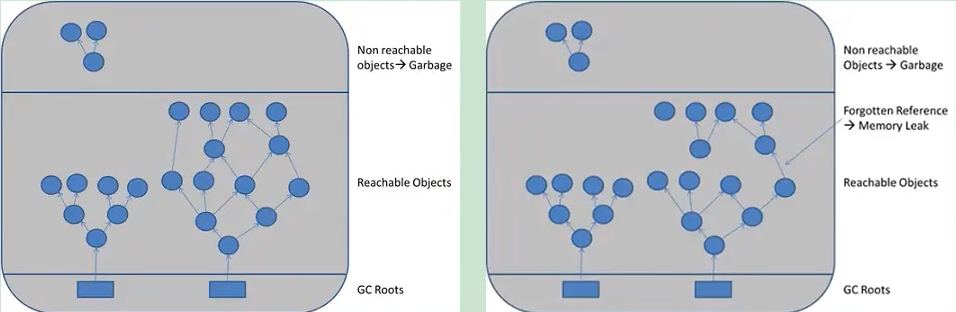
可达性分析算法来判断对象是否是不再使用的对象，本质都是判断一个对象是否还被引用。那么对于这种情况下，由于代码的实现不同就会出现很多种内存泄漏问题（让 JVM 误以为此对象还在引用中，无法回收，造成内存泄漏)。
- 是否还被使用? 是
- 是否还被需要? 否
内存泄漏的理解
严格来说，只有对象不会再被程序用到了，但是 GC 又不能回收他们的情况，才叫内存泄漏。
但实际情况很多时候一些不太好的实践（或疏忽）会导致对象的生命周期变得很长甚至导致 OOM, 也可以叫做宽泛意义上的"内存泄漏"。
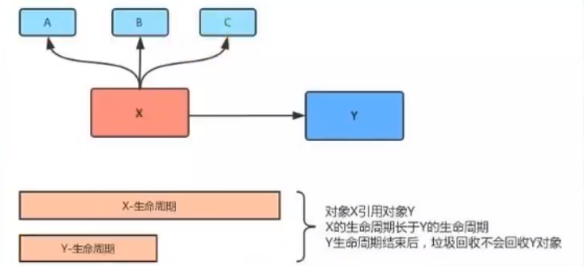
对象 X 引用对象 Y, X 的生命周期比 Y 的生命周期长：
那么当 Y 生命周期结束的时候，X 依然引用着 Y, 这时候，垃圾回收期是不会回收对象 Y 的：
如果对象 X 还引用着生命周期比较短的A、B、C, 对象 A 又引用着对象a、b、c,这样就可能造成大量无用的对象不能被回收，进而占据了内存资源，造成内存泄漏，直到内存溢出。
内存泄漏与内存溢出的关系
-
内存泄漏(memory leak)
申请了内存用完了不释放，比如一共有 1024M 的内存，分配了 521M 的内存一直不回收，那么可以用的内存只有 521M 了，仿佛泄露掉了一部分：
通俗一点讲的话，内存泄漏就是【占着茅坑不拉💩】。
-
内存溢出(out of memory)
申请内存时，没有足够的内存可以使用：
通俗一点儿讲，一个厕所就三个坑，有两个站着茅坑不走的（内存泄漏），剩下最后一个坑，厕所表示接待压力很大，这时候一下子来了两个人，坑位（内存）就不够了，内存泄漏变成内存溢出了。
泄漏的分类
- 经常发生: 发生内存泄漏的代码会被多次执行, 每次执行, 泄漏一块内存
- 偶然发生: 在某些特定情况下才会发生
- 一次性: 发生内存泄漏的方法指挥执行一次
- 隐式泄漏: 一直占着内存不释放, 知道执行结束; 严格的说这个不算内存泄漏, 因为最终释放掉了, 但是如果执行时间特别长, 也可能会导致内存耗尽
内存泄漏的8种情况
1-静态集合类
静态集合类，如 HashMap、LinkedList 等等。如果这些容器为静态的，那么它们的生命周期与 JVM 程序一致，则容器中的对象在程序结束之前将不能被释放，从而造成内存泄漏。简单而言，长生命周期的对象持有短生命周期对象的引用，尽管短生命周期的对象不再使用，但是因为长生命周期对象持有它的引用而导致不能被回收。
public class MemoryLeak {
//静态集合类
static List list = new ArrayList();
public void oomTests() {
Object obj = new Object();//局部变量
list.add(obj);//由于list容器是静态的, 随着类加载而加载, 从而使对象无法被回收
}
}2-单例模式
单例模式，和静态集合导致内存泄露的原因类似，因为单例的静态特性，它的生命周期和 JVM 的生命周期一样长，所以如果单例对象如果持有外部对象的引用，那么这个外部对象也不会被回收，那么就会造成内存泄漏。
3-内部类持有外部类
内部类持有外部类，如果一个外部类的实例对象的方法返回了一个内部类的实例对象。
这个内部类对象被长期引用了，即使那个外部类实例对象不再被使用，但由于内部类持有外部类的实例对象，这个外部类对象将不会被垃圾回收，这也会造成内存泄漏。
4-各种连接, 如数据库连接、网络连接和IO连接等
各种连接，如数据库连接、网络连接和IO连接等。
在对数据库进行操作的过程中，首先需要建立与数据库的连接，当不再使用时，需要调用 close 方法来释放与数据库的连接。只有连接被关闭后，垃圾回收器才会回收对应的对象。
否则，如果在访问数据库的过程中，对Connection、Statement 或 ResultSet 不显性地关闭，将会造成大量的对象无法被回收，从而引起内存泄漏。
public class ConnectLeak {
public static void main(String[] args) {
try {
Connection conn = null;
Class.forName("com.mysql.jdbc.Driver");
conn = DriverManager.getConnection("url", "", "");
Statement stmt = conn.createStatement();
ResultSet rs = stmt.executeQuery("...");
} catch (Exception e) {
} finally {
//1.关闭结果集 Statement
//2.关闭声明的对象 ResultSet
//3.关闭连接 Connection
}
}
}5-变量不合理的作用域
变量不合理的作用域。一般而言，一个变量的定义的作用范围大于其使用范围，很有可能会造成内存泄漏。另一方面，如果没有及时地把对象设置为 null, 很有可能导致内存泄漏的发生。
public class UsingRandom {
private String msg;
public void receiveMsg() {
//private String msg; //可定义在方法中
readFromNet();//从网络中接收数据保存到msg中
saveDB();//把msg保存到数据库中
}
}如上面这个伪代码，通过 readFromNet 方法把接受的消息保存在变量 msg 中，然后调用 saveDB 方法把 msg 的内容保存到数据库中，此时 msg 已经就没用了，由于 msg 的生命周期与对象的生命周期相同，此时 msg 还不能回收，因此造成了内存泄漏。
实际上这个 msg 变量可以放在 receiveMsg 方法内部，当方法使用完，那么 msg 的生命周期也就结束，此时就可以回收了。还有一种方法，在使用完 msg 后，把 msg 设置为 null ,这样垃圾回收器也会回收 msg 的内存空间。
6-改变哈希值👍
改变哈希值，当一个对象被存储进 HashSet 集合中以后，就不能修改这个对象中的那些参与计算哈希值的字段了。
否则，对象修改后的哈希值与最初存储进 HashSet 集合中时的哈希值就不同了，在这种情况下，即使在 contains 方法使用该对象的当前引用作为的参数去 HashSet 集合中检索对象，也将返回找不到对象的结果，这也会导致无法从 HashSet 集合中单独删除当前对象，造成内存泄漏。
这也是 String 为什么被设置成了不可变类型，我们可以放心地把 String 存入 HashSet, 或者把 String 当做 HashMap 的 key 值；
当我们想把自己定义的类保存到散列表的时候，需要保证对象的 hashCode 不可变。
- 案例一
public class ChangeHashCode {
public static void main(String[] args) {
HashSet<Point> hs = new HashSet<>();
Point cc = new Point();
cc.setX(10);//hashCode = 41
hs.add(cc);
cc.setX(20);//hashCode= 51 此行为修改了hash值, 导致了内存泄漏
System.out.println("hs.remove(cc) = " + hs.remove(cc));//false
hs.add(cc);
System.out.println("hs.size() = " + hs.size());//size=2
System.out.println(hs);
}
}
class Point {
private int x;
public int getX() {
return x;
}
public void setX(int x) {
this.x = x;
}
@Override
public boolean equals(Object o) {
if (this == o) return true;
if (o == null || getClass() != o.getClass()) return false;
Point point = (Point) o;
return x == point.x;
}
@Override
public int hashCode() {
final int prime = 31;
int result = 1;
result = prime * result + x;
return result;
}
@Override
public String toString() {
return "Point{" +
"x=" + x +
'}';
}
}- 案例二
public class ChangeHashCode1 {
public static void main(String[] args) {
HashSet<Object> set = new HashSet<>();
Person p1 = new Person(1001, "AA");
Person p2 = new Person(1002, "BB");
set.add(p1);
set.add(p2);
p1.name = "CC";//导致了内存的泄漏
set.remove(p1);//删除失败
System.out.println(set);
set.add(new Person(1001, "CC"));
System.out.println(set);
set.add(new Person(1001, "AA"));
System.out.println(set);
//此时总共进来了4个元素
}
}
class Person {
int id;
String name;
public Person(int id, String name) {
this.id = id;
this.name = name;
}
@Override
public boolean equals(Object o) {
if (this == o) return true;
if (o == null || getClass() != o.getClass()) return false;
Person person = (Person) o;
if (id != person.id) return false;
return Objects.equals(name, person.name);
}
@Override
public int hashCode() {
int result = id;
result = 31 * result + (name != null ? name.hashCode() : 0);
return result;
}
@Override
public String toString() {
return "Person{" +
"id=" + id +
", name='" + name + '\'' +
'}';
}
}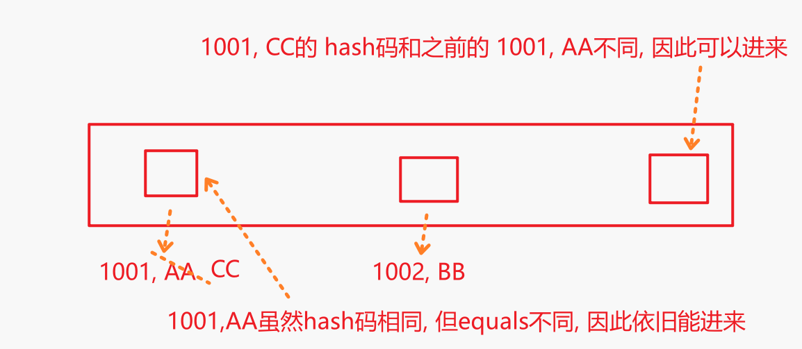
7-缓存泄漏
内存泄漏的另一个常见来源是缓存，一旦你把对象引用放入到缓存中，他就很容易遗忘。比如：之前项目在一次上线的时候，应用启动奇慢直到夯死，就是因为代码中会加载一个表中的数据到缓存（内存）中，测试环境只有几百条数据，但是生产环境有几百万的数据。
对于这个问题，可以使用 WeakHashMap 代表缓存，此种 Map 的特点是，当除了自身有对 key 的引用外，此 key 没有其他引用那么此 map 会自动丢弃此值。
public class CacheMapTest {
static Map wMap = new WeakHashMap();
static Map map = new HashMap();
public static void main(String[] args) {
init();
testWeakHashMap();
testHashMap();
}
public static void init() {
String ref1 = new String("obejct1");
String ref2 = new String("obejct2");
String ref3 = new String("obejct3");
String ref4 = new String("obejct4");
wMap.put(ref1, "cacheObject1");
wMap.put(ref2, "cacheObject2");
map.put(ref3, "cacheObject3");
map.put(ref4, "cacheObject4");
System.out.println("String引用ref1，ref2，ref3，ref4 消失");
}
public static void testWeakHashMap() {
System.out.println("WeakHashMap GC之前");
for (Object o : wMap.entrySet()) {
System.out.println(o);
}
try {
System.gc();
TimeUnit.SECONDS.sleep(5);
} catch (InterruptedException e) {
e.printStackTrace();
}
System.out.println("WeakHashMap GC之后");
for (Object o : wMap.entrySet()) {
System.out.println(o);
}
}
public static void testHashMap() {
System.out.println("HashMap GC之前");
for (Object o : map.entrySet()) {
System.out.println(o);
}
try {
System.gc();
TimeUnit.SECONDS.sleep(5);
} catch (InterruptedException e) {
e.printStackTrace();
}
System.out.println("HashMap GC之后");
for (Object o : map.entrySet()) {
System.out.println(o);
}
}
}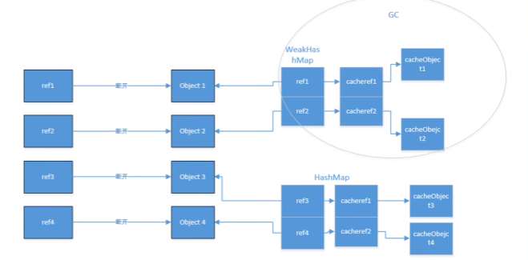
上面代码和图示主演演示 WeakHashMap 如何自动释放缓存对象, 当 init 函数执行完成后, 局部变量字符串引用 weakd1, weakd2, d1, d2 都会消失, 此时只有静态 map 中保存对字符串对象的引用, 可以看到, 调用 gc 之后, HashMap 的没有被回收, 而 WeakHashMap 里面的缓存被回收了。
8-监听器和回调
内存泄漏第三个常见来源是监听器和其他回调，如果客户端在你实现的 API 中注册回调，却没有显示的取消，那么就会积聚。
需要确保回调立即被当作垃圾回收的最佳方法是只保存它的弱引用，例如将他们保存成为 WeakHashMap 中的键。
内存泄漏案例分析
public class Stack {
private Object[] elements;
private int size = 0;
private static final int DEFAULT_INITIAL_CAPACITY = 16;
public Stack() {
elements = new Object[DEFAULT_INITIAL_CAPACITY];
}
public void push(Object e) { //入栈
ensureCapacity();
elements[size++] = e;
}
//存在内存泄漏
public Object pop() { //出栈
if (size == 0)
throw new EmptyStackException();
return elements[--size];//此处移出的时候只是将指针前移, 并没有真正移出对象, GC也无法回收
}
//应该改成这样
public Object pop() {
if (size == 0)
throw new EmptyStackException();
Object result = elements[--size];
elements[size] = null;//将堆中数据指针断掉
return result;
}
private void ensureCapacity() {
if (elements.length == size)
elements = Arrays.copyOf(elements, 2 * size + 1);
}
}OQL语言查询对象信息
MAT 支持一种类似于 SQL 的查询语言 OQL(Object Query Language)。OQL 使用类 SQL 语法，可以在堆中进行对象的查找和筛选。
Select 子句：
在MAT中，Select 子句的格式与 SQL 基本一致，用于指定要显示的列。Select 子句中可以使用"*"，查看结果对象的引用实例（相当于outgoing references)。
SELECT FROM java.util.Vector v使用"OBJECTS"关键字，可以将返回结果集中的项以对象的形式显示。
SELECT objects v.elementData FROM java.util.Vector v
SELECT OBJECTS s.value FROM java.lang.String s在 Select 子句中，使用"AS RETAINED SET"关键字可以得到所得对象的保留集。
SELECT AS RETAINED SET FROM com.saddyfire.mat.Student"DISTINCT"关键字用于在结果集中去除重复对象。
SELECT DISTINCT OBJECTS classof(s)FROM java.lang.String sFROM子句
Fom子句用于指定查询范围，它可以指定类名、正则表达式或者对象地址。
SELECT FROM java.lang.String s下例使用正则表达式，限定搜索范围，输出所有 com.saddyfire 包下所有类的实例
SELECT FROM "com\.saddyfire\..*"也可以直接使用类的地址进行搜索。使用类的地址的好处是可以区分被不同 ClassLoader 加载的同一种类型
select from 0x37a0b4dWHERE子句
Where 子句用于指定 OQL 的查询条件。OQL 查询将只返回满足 Where 子句指定条件的对象。
Where 子句的格式与传统 SQL 极为相似。
下例返回长度大于 10 的 char 数组。
SELECT FROM char[] s WHERE s.@length>10下例返回包含 “java” 子字符串的所有字符串，使用 "LIKE 操作符，“LIKE” 操作符的操作参数为正则表达式。
SELECT FROM java.lang.String s WHERE toString(s) LIKE "*java.*下例返回所有 value 域不为 null 的字符串，使用 “=” 操作符。
SELECT FROM java.lang.String s where s.value != nullWhere 子句支持多个条件的 AND、OR 运算。下例返回数组长度大于15，并且深堆大于 1000 字节的所有 Vector 对象。
SELECT FROM java.util.Vector v WHERE v.elementData.@length>15 AND v.@retainedHeapsize>1000内置对象与方法
OQL 中可以访问堆内对象的属性，也可以访问堆内代理对象的属性。访问堆内对象的属性时，
格式如下：
[ <alias>. ] <field>.<field>.<field>其中 alias 为对象名称。
访问 java.io.File 对象的 path 属性，并进一步访问 path 的 value 属性：
SELECT toString(f.path.value) FROM java.io.File f下例显示了 String 对象的内容、objectid 和 objectAddress。
SELECT s.toString(),s.@objectId,s.@objectAddress FROM java.lang.String s下例显示 java.util.Vector 内部数组的长度。
SELECT v.elementData.@length FROM java.util.Vector v下例显示了所有的java.util.Vector对象及其子类型
select from INSTANCEOF java.util.Vector